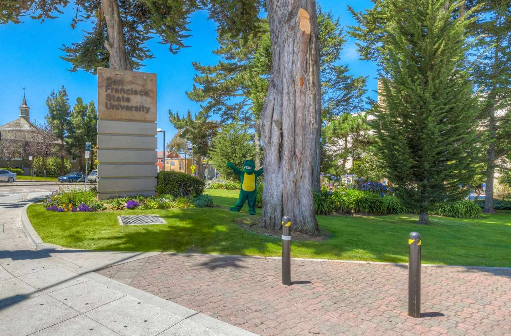
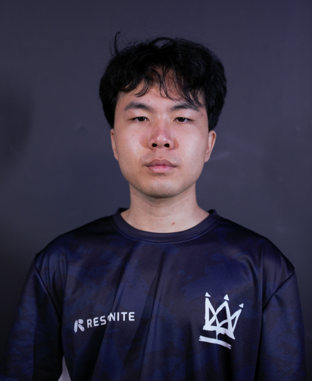
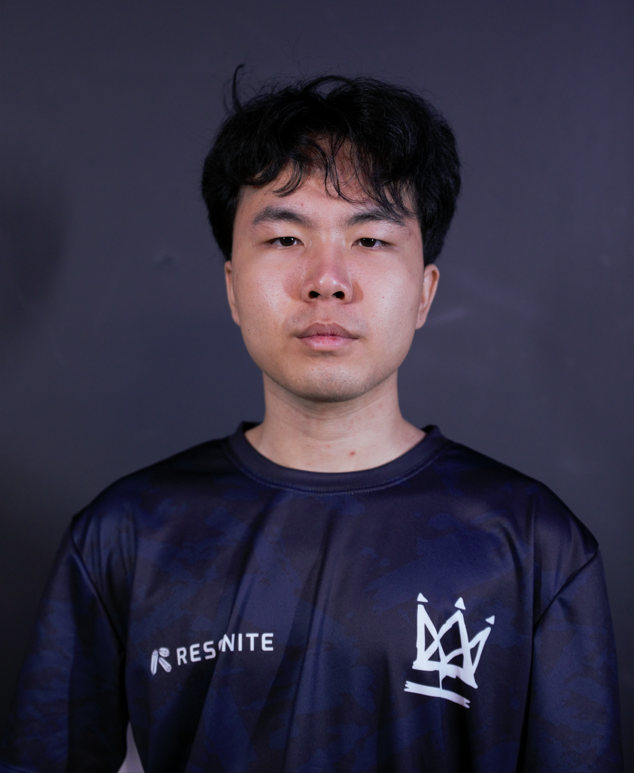

About Me
My name is Tyler Duong. I lived in SF all my life. I have recently transfered from CCSF to SFSU this semester. I am currently an undergraduate who is currently working through his Bachelors Degree of Science in Computer Science., and some hobbies I really enjoy are playing video games and going on walks. I love reading manga/manhwa, and watching anime as well. I also enjoy challenges and learning.
 View Larger Map
View Larger Map
Projects
Personal Portfolio Website
A website that represents me and my talents. You are looking at the interaction and dynamic Personal Portfolio that is constantly being updated and improving!
Ai Messsaging App (Fake!!!)
An app that allows you to interact and talk to an AI person of your choosing, with dynamic and different personalities and looks!
Calculator (Fake!!)
An app that does instant calculations for you.
Skills
- Java
- HTML5
- Python
- Assembly
Education
Community College of San Francisco
Completing Associate's Degree in Science
San Francisco State University
Undergraduate in Bachelor of Science in Computer Science

Work Experience
Competing in a Pro Team
Currently I dont have any work experience, but as a result of being in a Pro team setting for a long period of time, I have personally become better with:
- Interpersonal Communcation
- Team Management
- Leadership
- Being Creative
- Problem Solving
- Stress management
- Mental Resilience
Extra Curricular
One of my favorite games of all time is Valorant. For the past 3-4 years, I have been playing this game whilst doing school fulltime. One could say that Valorant is basically my life and a payless job. Every single day I play around 6 hours, practicing and playing within a team in order to improve daily to become a Professional Player. It has been a long journey that has taught me alot about balancing life and happiness. I am very passionate about this dream, and hope one day I can make it so I can earn money through something I love. Below will be one photo I took while I was at an LAN tournament recently in Miami.
 

You can interact with the images above to see my videos and personal brand in the valorant scene!